Georeferencing Aerial Imagery
[ Download PDF A4 Letter ]
In the tutorial Georeferencing Topo Sheets and Scanned Maps we covered the basic process of georeferencing
in QGIS. That method involved reading the coordinates from your scanned map and
inputting it manually. Many times though you may not have the coordinates
printed on your map, or you are trying to georeference an image. In that
case, you can use another georeferenced data source as your input. In this
tutorial, you will learn how to use existing open data sources in your
georeferencing process.
Overview of the task
We will georeferenced high resolution balloon-imagery using reference
coordinates from OpenStreetMap.
Other skills you will learn
- Downloading super high-resolution public domain imagery.
- Using the OpenLayers plugin in QGIS.
- Converting coordinates between different projection using cs2cs command-line tool.
- Using an existing georeferenced layer to input GCP points in the Georeferencer tool.
- Setting a custom no-data value for a layer.
Get the data
In this tutorial, we will be using some gorgeous kite and balloon imagery
collected by The Public Laboratory.
They make the georeferenced versions of the images also available, but we will
download a non-georeferenced JPG image and go through the process of
georeferencing it in QGIS. If you like the imagery they provide, you can
explore it
in Google Earth as well.
Download the JPG image of Washington Square Park, New York.
You can right-click the JPG button and choose Save link as....
Procedure
- For this tutorial, we will be using the OpenStreetMap layer as our reference
layer. Install the OpenLayers plugin from . See Using Plugins for more
information on using plugins in QGIS.
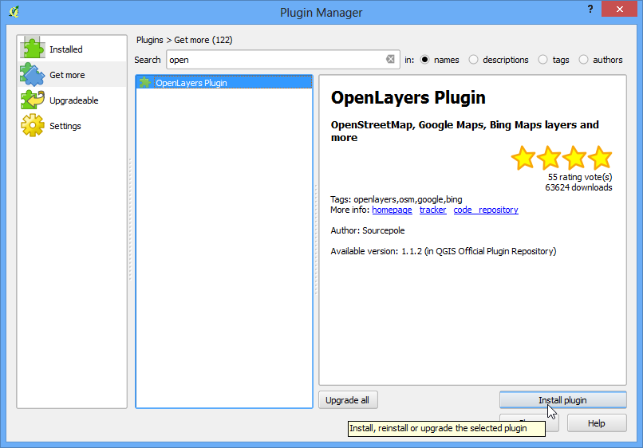
- Once installed, go to . This will add a layer of pre-rendered tiles created
from OpenStreetMap data.
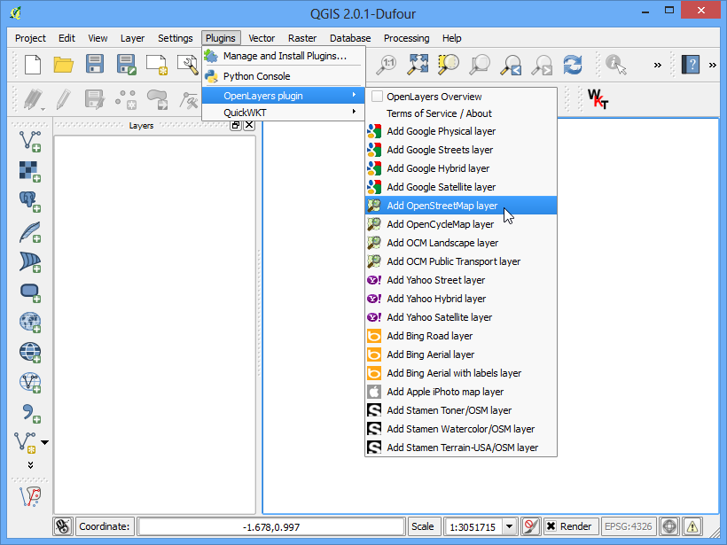
- Now you have the OpenStreetMap layer loaded in QGIS. Note the Coordinate
Reference System (CRS) for this layer. It is set as EPSG 3857 Pseudo
Mercator. This is important to note, since the coordinates we infer from
this layer will be in this CRS.
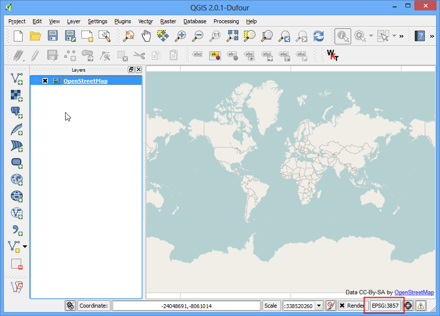
- Now the task is to locate the general vicinity of the area that we are
trying to georeference. You can just use Pan and Zoom tools to locate that
area on the OpenStreetMap layer. But I will take this chance to demonstrate
another tool that may help you in future. We know that the image we
downloaded is for Washington Square Park in New York. If you search for that
place, you will be able to locate the wikipedia page for it. The coordinates
for the park are listed there.
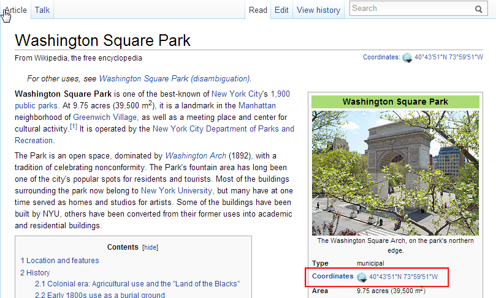
- You will notice that the coordinates are in Degrees/Minute/Seconds and are
Latitude and Longitude. But since our layer is in Mercator projection, we
will need Mercator coordinates to locate the park. Here’s where a
command-line tool called cs2cs comes handy. If you have installed QGIS
from OSGeo4W installer, you will already have it installed on your system.
On Linux and Mac too, it comes pre-installed with QGIS. Launch a terminal
window and type cs2cs to check if it is available. Windows users can find
a terminal at .
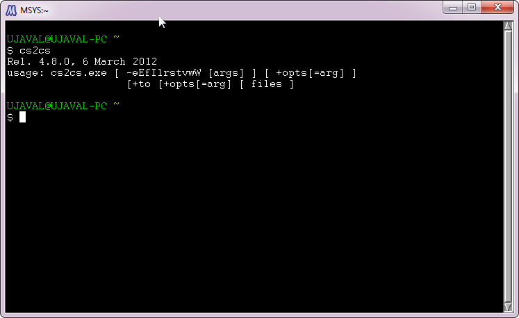
- Once you have verified that the cs2cs tool exists on your system, it is time
to convert out Latitude and Longitude to Mercator coordinates. The way this
tool works is that you need to specify a source and
destination CRS. The CRS definition could be a PROJ4 string
or an EPSG code. Since we already
know the EPSG code for out input and output CRS, we will use this. The
simplest way to use the tool is to supply the input coordinates on the
command line itself. Note that the tool accepts coordinates in the order X
Y, so we need to enter Longitude Latitude.
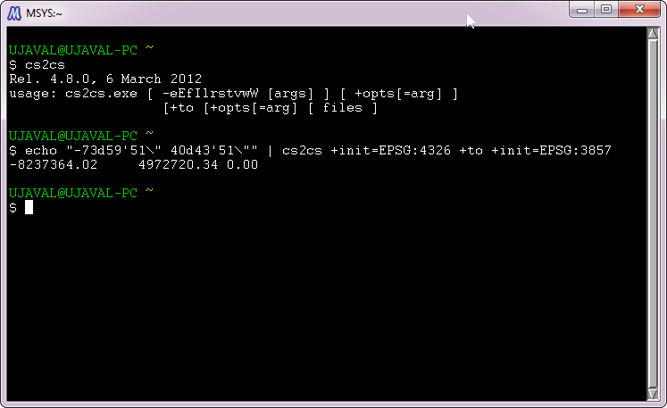
- Once you press enter, you will see the tool process the coordinates and
print out output X Y coordinates in EPSG 3857 CRS. Copy these coordinates
and switch to QGIS. At the bottom of the QGIS window, you will see a textbox
labeled Coordinates. Enter the coordinates there in X,Y form. Press Enter.
You will see the map shift a bit, but not zoom. To zoom to the area, select
1:2500 scale from the Scale drop-down next to the Coordinate box and press
Enter.
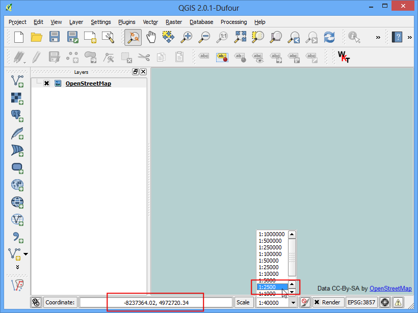
- Voila! you now see Washington Square Park area on your canvas. Now it is
time to start georeferencing. Launch the Georeferencer from
. If you do not
see that menu item, you will need to enable the Georeferencer
GDAL plugin from .
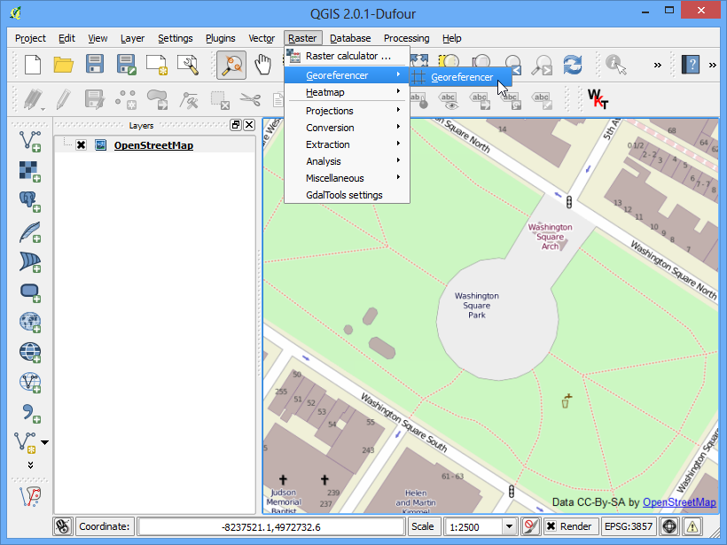
- In the Georeferencer window, go to . Navigate to the downloaded JPG file and click Open.
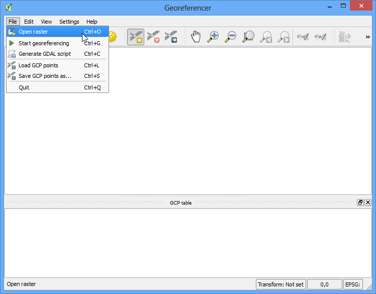
- In the Coordinate Reference System Selector,
choose EPSG:3857 Pseudo Mercator
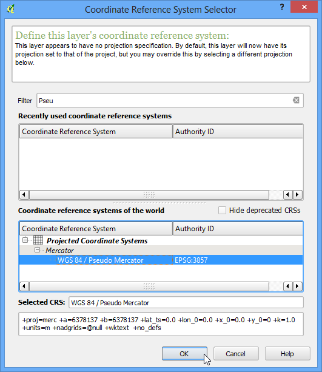
- Now click on the Add Point button on the toolbar and select an easily
identifiable location on the image. Corners, intersections, poles etc. make
good control points.
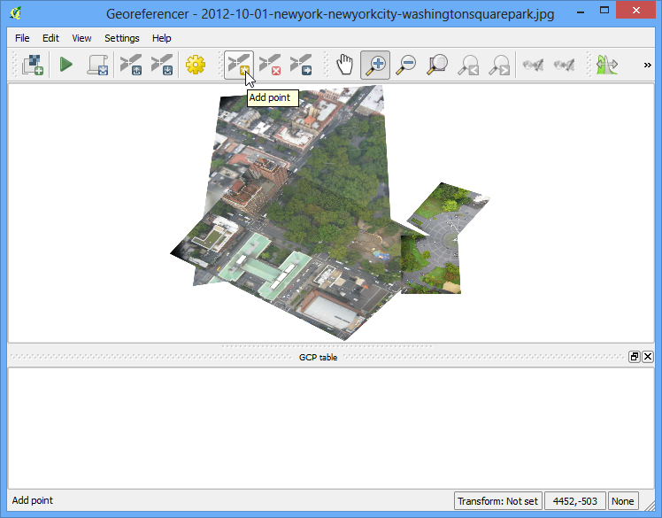
- Once you click on the image at a control point location, you will see a
pop-up asking you to enter map coordinates. Click the button
From map canvas.
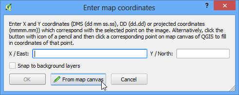
- Find the same location in your reference layer, i.e. the OpenStreetMap
layer and click there. The coordinates are auto-populated from your click
on the map canvas. Click Ok. Similarly, choose at least 4 points on the
image and add their coordinates from the reference layer.
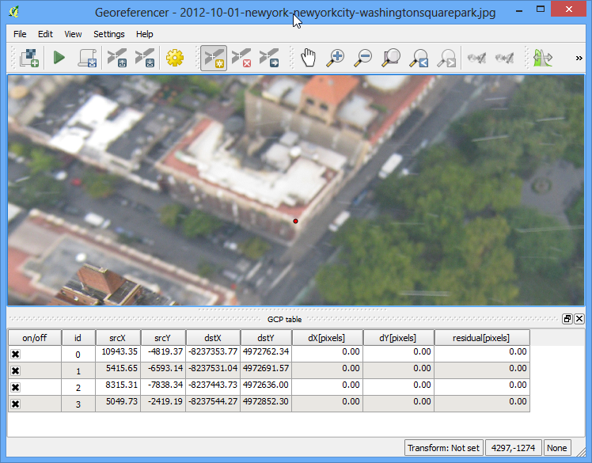
- Now go to
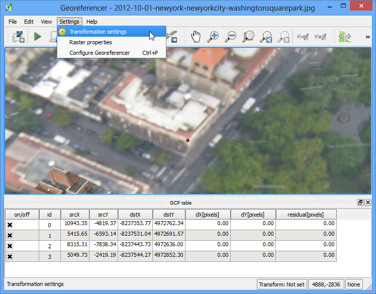
- Choose the settings as shown below. Make sure you the Load in QGIS
when done button is checked. Click OK. Back in the Georeferencer window,
go to . This will start the process
of warping the image using the GCPs and creating the target raster.
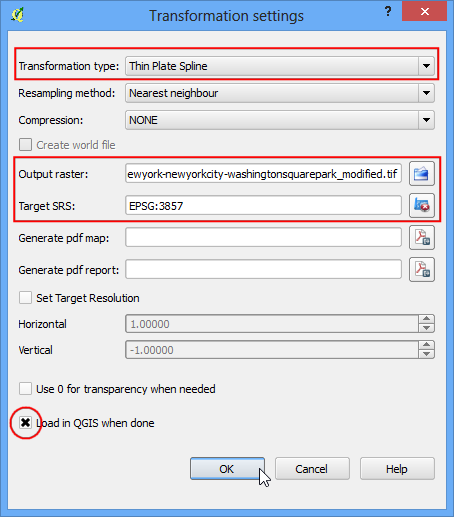
- Once the process finishes, you will see the georeferenced layer loaded in
QGIS. If all went well, you will see it nicely overlay the OpenStreetMap
layer.
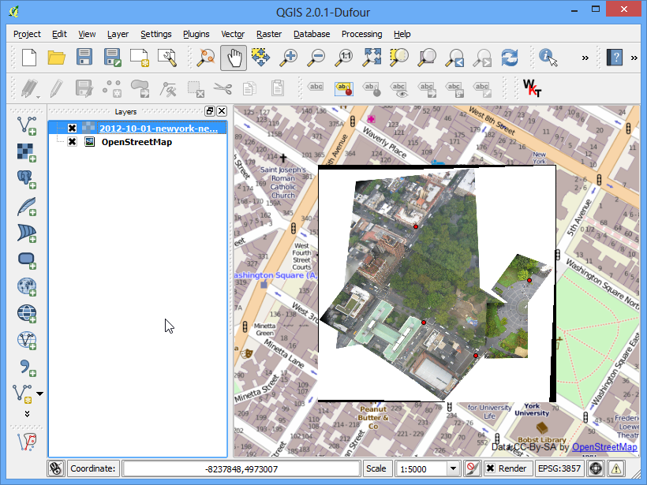
- To make our output look nicer, let’s remove the back and white no-data values. Right
click on the image layer and choose Properties.
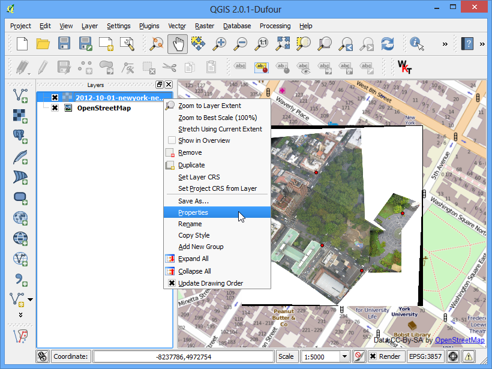
- Switch to the Transparency tab. We want to indicate that any
black or white pixels in the image are no-data values and should be made
transparent. Input 0 as the No data value. Also, in the
Custom transparency options, click the + button and
add 255 as the transparent pixels for each band and enter 100 as the
:Percent transparent. Click OK.
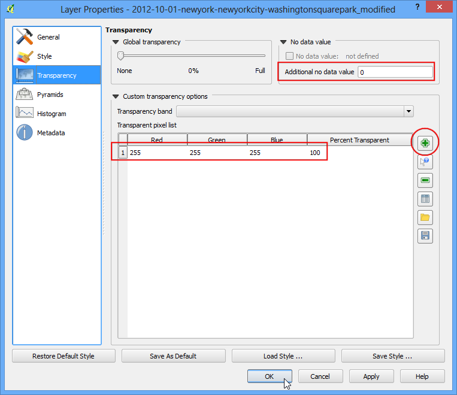
- Now you will see your georeferenced image nicely overlaid on the base layer.
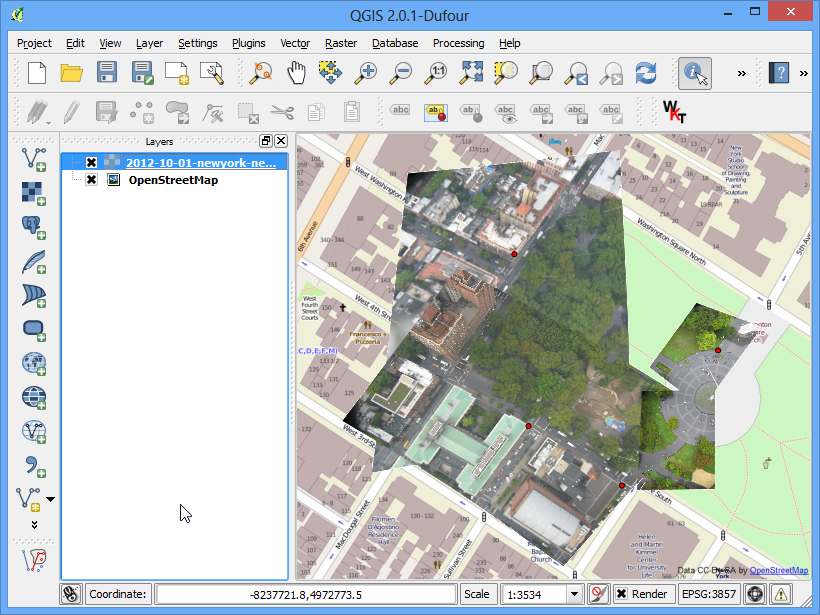